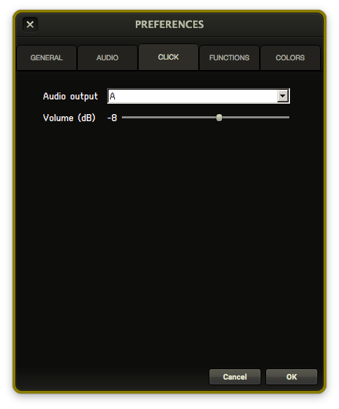

Menus
RMS Coach® provides a variety of useful tools and customization options through the program menus.
Preferences
You can access the Preferences menu through the toolbar, or by hitting CTRL-, (windows) or ⌘-, (mac).

General
Underneath the general tab you can change the order of instruments that show up in the drop-down menu of the Parts list. By default it is set to "General MIDI" order.
You can also change the default location of backups created under the "Tools" menu. See Backup/Load
Audio
The Audio tab will provide a drop-down list of all valid audio devices on your system. If you are unable to hear sound from RMS Coach®, this is the first place you should check.
Click
The Click tab lets you route the metronome click to a different stereo output (if you have more than one available to your system). You can also set the volume of the click in dB (decibels).
Functions
The Functions tab shows a list of shortcuts assigned to F1-F12, and these shortcuts may be reassigned using the drop-down menus.
Colors
The Colors tab allows you to see and change the colors assigned to each of the various types of edits within the Timeline.
File
New
Using the "New" command will create a clean, unedited version of your current show that you may work from.
Save
Saves your current edits.
Open
"Open" will provide a drop-down list of all valid showfiles saved on your computer that you may run.
Save As
Using the "save as" command allows you to create a copy of your current show file under a different name, and makes that the currently active showfile.
Mode-E / Mode-P
This menu provides an alternate method of toggling between Performance Mode (Mode-P) and Edit Mode (Mode-E). The other method to do this is by toggling the lock icon on the Timeline.
Tools
Backup
Running the "backup" command will allow you to save the current showfile at a specific location on your hard drive, or on an attached device (such as a USB drive). This is the method by which you should share your edited showfile with cast members or the production team.
Export to RMS Mix®
This will render your show for use within RMS Mix®. For more information on RMS Mix®, please visit the RMS Mix® website.
Extend License
If you have contacted RMS and made arrangements to extend the license of your installation of RMS Coach®, selecting this will allow you to input the extension code that RMS has sent you.
Get Shows
"Get shows" will quit out of RMS Coach® (first prompting you to save any changes) and launch the RMS Show Delivery program that was run at first installation. RMS Coach® will then relaunch at completion.
Get Sounds
"Get sounds" will likewise quit RMS Coach® and run RMS SampleSync. Run this in conjunction with the loading of any new show to make sure you have all the sounds required.
Load
"Load" will allow you to open a showfile from anywhere on your computer hard drive or attached drive. If you have sent your cast members or production team a version of the show using the "Backup" command, they should use "Load" to open it.
MIDI reset
"MIDI reset" turns off all active MIDI data, in the case of stuck notes. By default, this is bound to the F1 key.
Share Show Data
This allows you to send you current show to members of your production via email. For more information, please see Sharing Your Showdata.
Help
Under the Help menu, you will find links to both the main Realtime Music Solutions® website as well as this manual.
If you are running a trial version, this is also where you can submit a request to purchase a license, or activate a license purchased by someone else in your organization.